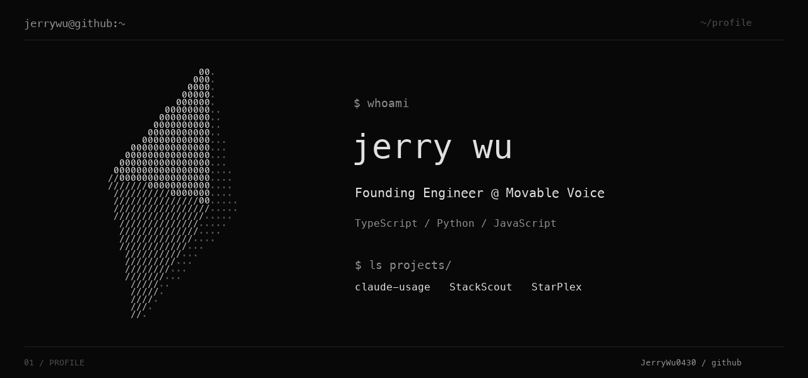

$ cat about.txt
I'm Jerry, a Founding Engineer at Movable Voice. I build developer tools and AI applications, mostly in TypeScript, Python, and JavaScript.
My public projects explore how developers work with AI: auditing Claude Code setups, recommending developer tools, and experimenting with interfaces like smart glasses. I also build at hackathons, with projects that have placed at Hack Nation, Perplexity London, and Mistral AI × Jump Trading.
$ ls projects/
- claude-usageAudit the Claude Code skills, commands, plugins and MCP servers you actually use.
- StackScoutDeveloper-tool recommendations. 1st place in London, Hack Nation 4th.
- StarPlex2nd place, Perplexity London Hackathon 2025.
- PolyBansPolymarket arbitrage with Meta Ray-Bans. 1st place, Best Use of Data, Mistral AI × Jump Trading.